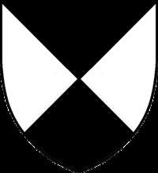

3992215 Kristine Nilsdotter Ulfeldt (Hak)

Far:
Född:
omkring 1350 Riis, Ordrup, Själland, Danmark.
Död:
efter 1380 Terlöse, Danmark.
Barn med 3992214 Hartvig Bryske (1361? - >1408)
Barn:
Personhistoria
Årtal
Ålder
Händelse
1350?
Födelse omkring 1350 Riis, Ordrup, Själland, Danmark
1361?
Partnern 3992214 Hartvig Bryske föds omkring 1361 Kragerup, Danmark
1380?
Fadern 7984430 Niels Stigesen Hak (af Riis) dör omkring 1380
>1380
Död efter 1380 Terlöse, Danmark
Bilder
